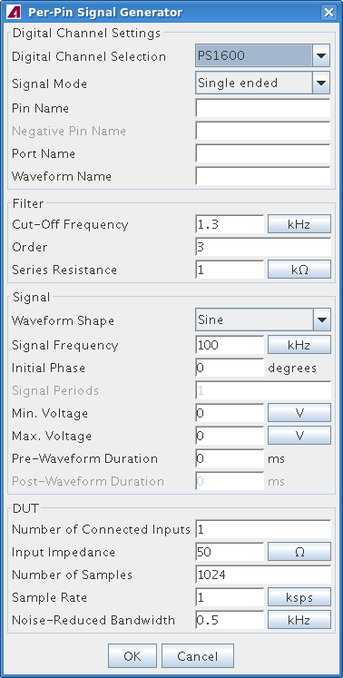

Starting the Per-Pin Signal Generator
The Per-Pin Signal Generator (PPSG) is started from the Tool menu of the Signal Analyzer Tool.
About this task
Start the PPSG to create a new pattern for simulating analog signals over digital channels.
Before you begin
Make sure that STIL Reader is installed and you have a license for it.
Procedure
- Start the Signal Analyzer Tool.
- Choose .
Results
The Per-Pin Signal Generator window is displayed.

What to do next
Generate the desired pattern, as described in Generating a pattern with PPSG.
Functional changes
- Introduced in SmarTest 7.2.0